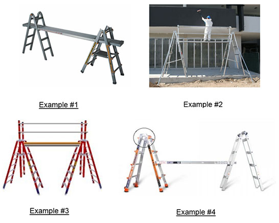

22.T Trestle Ladder Scaffolds
22.T.01–22.T.04
22.T.01 Scaffold platforms must be placed no higher than the second-highest rung or step of the ladder supporting the platform.
22.T.02 All ladders used in step, platform and trestle ladder scaffolds must:
- Meet or exceed 29 CFR 1926 Subpart X.
▸Note: Job-made ladders are not permitted.
- Be prevented from slipping by how they are placed, fastened, or equipped.
22.T.03 Scaffolds must not be bridged one to another.
22.T.04 Climbing and Working Locations. The user shall climb or work with the body near the middle of the step or rung. Higher than the step or rung indicated on the label marking the highest standing level of a ladder. The user shall not step or stand on:
- A ladder top cap or the top step of the step or trestle ladder, or the bucket or pail shelf of a self-supporting ladder.
- The rear braces of a self-supporting ladder, unless designed and recommended for that purpose by the manufacturer.
- The top step of the extension section of an extension trestle ladder.
- The top cap or top step of a combination ladder when it is used as a self-supporting ladder.
FIGURE 22-3
Trestle Ladder Scaffolds, Examples

{kind=link}